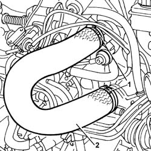

1048B16 PIPES AND/OR ELBOW BETWEEN TURBOCHARGER AND THROTTLE CASING - R.R.
- Path
- Procedures > 10 ENGINE UNIT > 1048 ENGINE AIR SUPPLY CIRCUIT > 1048B PRESSURE AIR CIRCUIT > 1048B16 PIPES AND/OR ELBOW BETWEEN TURBOCHARGER AND THROTTLE CASING - R.R.
- Kind
- repair procedure (removal / refitting; the operation number is the code)
- Applies to
- engines: 2.0 JTD 8V; all production periods
- Interactive page
- https://sloeber94.github.io/elrnDB-fDct/en/#/244000804
Applies to: engines: 2.0 JTD 8V; all production periods
 Removing
Removing
 Refitting
Refitting1. Disconnect the bands securing the elbow between the turbocharger and the throttle casing.
2. Remove the elbow between the turbocharger and the throttle casing.

Applies to: engines: 2.0 JTD 8V; all production periods
Refitting
Removing- Fit the elbow between the turbocharger and the throttle casing and connect the bands.
Topics that link to this page (8)
- 1016A20 SINGLE CAM COVER - R + R AND REPLACE GASKET
- 1036B10 OVERHEAD CAMSHAFT - R R ON VEHICLE
- 1048B12 RIGID PIPE CARRYING AIR BETWEEN TURBOCHARGER AND INLET MANIFOLD - R+R
- 1060G50 PNEUMATICALLY CONTROLLED THROTTLE BODY R R
- 1072B10 INLET MANIFOLD - R + R AND REPLACE SEAL
- 1088C30 THERMOSTAT UNIT - R+R
- 1088D24 RIGID PIPE FOR COOLANT INLET TO WATER PUMP - R + R
- 3330D30 VACUUM PUMP - R+R